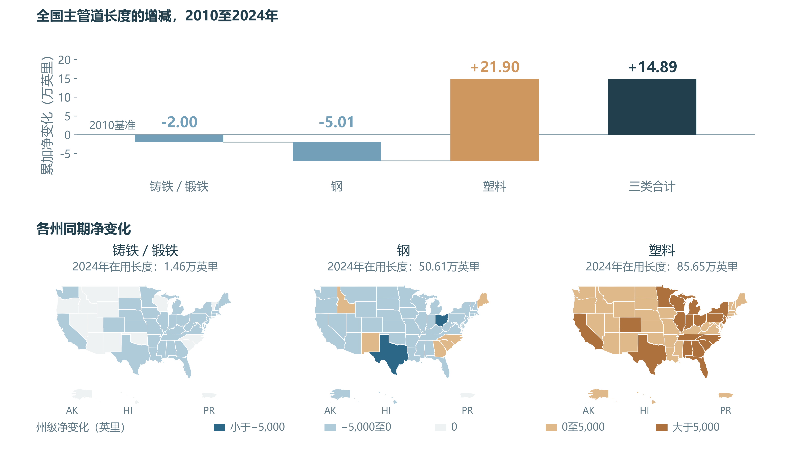
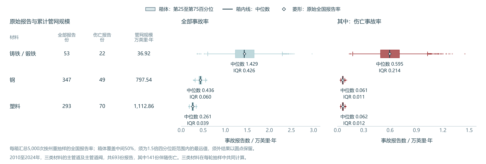
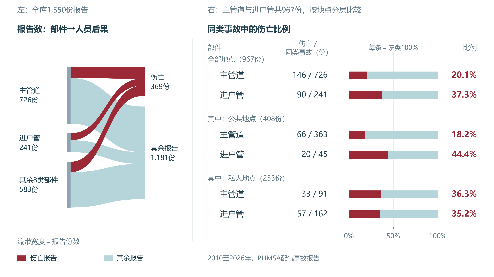
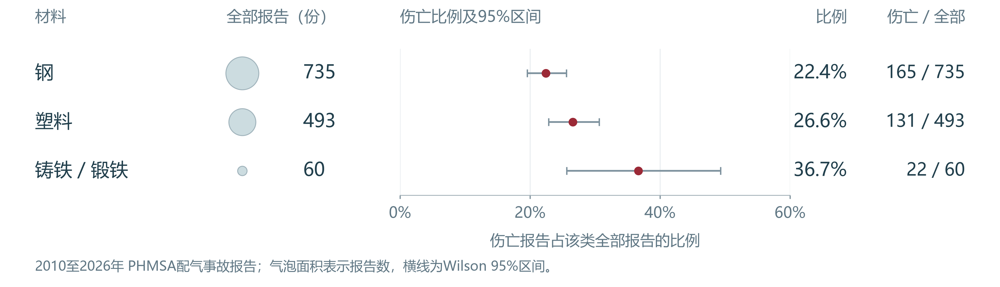
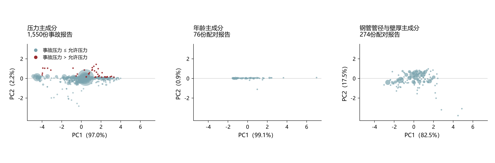
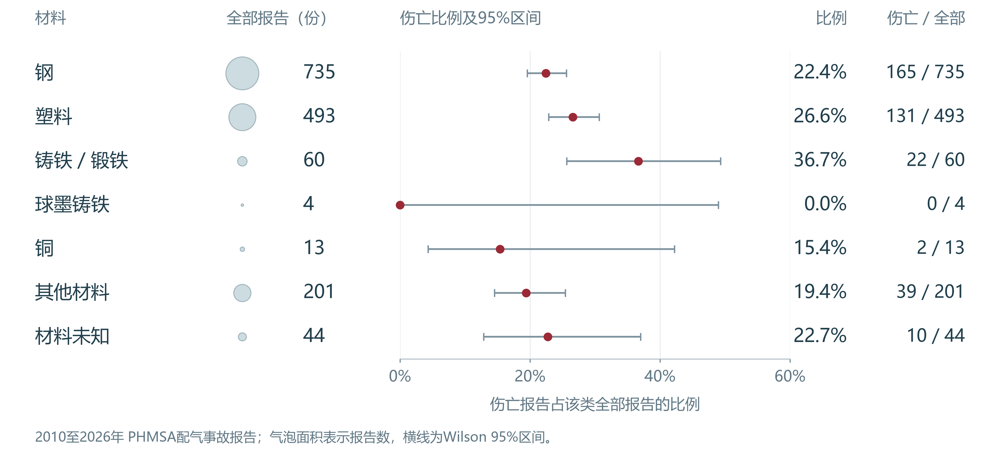

1.1 Business understanding and research objectives
本研究的目标是帮助燃气企业：
- 明确检查重点。
- 结合具体设施与作业情境，推导诱因和人员保护重点。
美国的燃气配气系统通过主管道沿道路和街区输送燃气，再由进户管连接家庭、商户等用户。燃气企业既要检查仍在使用的设施，也要保护查漏、停气和修复等任务中的现场人员。
本研究使用美国管道与危险品安全管理局（PHMSA）的公开资料，先了解管网与事故的基本情况，再研究损伤后的处置、季节环境和实际设施条件。
1.2 Data sources and cleaning
研究资料来自PHMSA的公开事故附件和年度管网附件。事故表一行是一份报告，记录设施、事故经过和人员后果；年报一行是一家运营商在某州或地区、某年的管网记录，列出各材料的在用主管道长度。
两类资料各回答一个问题：比较事故中的伤亡有多常见，用伤亡报告占同类事故报告的比例；比较材料的事故频率，还要计入铺设长度与观察年数。按长度计算的比较限定为能与年度长度对应的主管道及主管道阀报告，具体范围在1.3.1节交代。
事故资料覆盖2010年至2026年2月，共1,550份报告。依据PHMSA填报定义，本研究定义“伤亡报告”为至少一人死亡，或因伤入院并至少住一晚的报告，共369份。同一报告涉及多人伤亡，仍计一份。
计算前先检查重复记录、人员空白和日期含义，并处理年度长度中的异常值。发现的问题、处理理由及变化如下。
| 发现的问题 | 处理及理由 | 清洗后的变化 |
|---|---|---|
| 人员分项有空白 | 填“无”后可跳过人数，结合标记与已填人数核对 | 原始空白保留；标记为“无”且已填分项为零时，仅在核对求和时按零处理 |
| 44份材料“未知” | 单独列类，保留其人员后果 | 44份均保留，其中10份伴随伤亡 |
| 两份报告的运营商与事故时间相同 | 核对编号、地点和设施 | 确认为不同事故，两份均保留 |
| 161份报告的发生年与收件年不同 | 发生年与年度长度对应；收件年用于前后期比较 | 统一格式，两种年份分别保留 |
| 文本外层有成对引号 | 去除外层引号，保留内部文字 | 类别计数不变 |
| 两条年报的塑料里程为−0.5英里 | 长度应为非负数，排除两条记录 | 2010至2024年年报由22,035条减为22,033条 |
清洗后全部1,550份事故报告均保留，各类报告数及其中的伤亡报告数与清洗前一致。清洗前后逐类计数列出完整对照。
1.3 Network and incident profiling
1.3.1 管网材料背景与事故频率
材料铺设规模相差很大，原始事故份数需要结合在用长度理解。先看管网背景：钢管与塑料管构成美国配气主管网主体，铁管长度较少。本文“铁管”沿用原表的铸铁／锻铁类别，球墨铸铁保留为另一类。
塑料管增加21.90万英里，超过铁、钢减少的总长度



塑料管增加的长度超过铁管与钢管减少的总长度，三类合计净增14.89万英里，说明材料变化同时伴随管网扩张。具体哪些旧管段更换了材料，需要企业设施记录确认。检查安排应先从当地在用管材清单出发，再对照这些设施的泄漏与维修记录。
钢管与塑料管铺设得多，出现事故的机会也更多。判断铁管是否值得重点检查，需要比较同样长度、同样观察年数下记录了多少事故。1英里管道运行1年，计为1英里·年；1,000英里运行10年，合计为10,000英里·年。本研究累计各年的在用长度，再用对应事故报告数除以累计值，换算为每万英里·年的报告数。PHMSA统计示例采用相同的长度与年数思路。
事故与年度长度按同州、同年、同材料对应。比较范围限定为2010至2024年的铁管、钢管、塑料管主管道及主管道阀事故，共693份。图 2上半部展示逐年的在用长度；下半部比较归一化单位后的事故率，单位为份／万英里·年。箱线图汇总5,000次按州重抽样的全国报告率，中位数表示估计的典型位置，箱体从第25至第75百分位，显示中间一半结果的波动；菱形标出原始全国报告率。
虽然铁管报告数少，但归一化后的事故报告率更高
各材料逐年的在用长度

归一化单位后的事故率



虽然铁管原始报告数最少，但归一化后的全部事故报告率约为钢管的3.30倍；伤亡报告率约为钢管的9.70倍，估计区间为4.76至16.79倍。因此，企业应在当地设施清单中确认仍在用的铁管，结合泄漏、维修和安装年代记录，确定需要复核的管段。
同样长度和年数下的伤亡报告率，等于全部事故报告率乘以事故中的伤亡比例。塑料管的全部事故报告率较低，事故中的伤亡比例较高，最终伤亡报告率估计接近钢管。塑料管相对钢管为1.02倍，估计区间为0.71至1.38倍。理解人员后果还需要结合具体事故过程。
1.3.2 部件、地点与材料的伤亡比例
企业安排人员保护时，需要了解不同设施的历史伤害情况。本节比较同类已报告事故中伴随伤亡的比例。进户管为37.3%，主管道为20.1%；进户管报告较少，伤亡比例却较高。
公共地点的进户管伤亡比例较高，私人地点两类管道接近



场地分类描述设施所在位置：公共地点包括道路等公共区域，私人地点属于私人产权范围。图 3显示，公共地点中进户管的伤亡比例明显高于主管道；私人地点中，两类管道都约为三成半。因此，企业选择历史事故作人员保护参照时，应同时核对部件与场地。人员当时在哪里、执行什么任务，再由事故经过说明。
接着以相同方法比较涉事材料。图 4中，钢管报告最多，铁管事故中的伤亡比例较高。铁管高于钢管的证据较明确，铁管与塑料管的差别仍有较大估计误差。图中的横线表示估计范围，报告较少的铁管范围较宽。完整七类材料及区间方法保留在资料说明。
钢管报告最多，铁管事故中的伤亡比例较高



为核对历史经验是否仍见于近年来，本研究按PHMSA收到报告的年份比较2010至2021年与2022年起的报告。进户管的伤亡比例在两期均高于主管道。近期铁管只有7份、其中2份伴随伤亡且来自同一运营商，近期材料比较宜结合更长时期的记录。分期计数与差距变化
1.4 概念合并和PCA降维的尝试
为减少重复信息，我们分别检验三项压力、两项年龄，以及钢管管径与壁厚能否合并，再确定后续使用的字段。
压力、年龄与钢管尺寸的PCA投影



三项压力的第一主成分保留97.0%的标准化变异，可用一个得分概括共同压力水平。具体的事故压力与允许上限关系继续保存在原量对照表。
76份双年龄记录用于配对检验，第一主成分保留99.1%的变异。因此，后续以安装年龄代表“年龄（服役年龄）”，即事故发生年减安装年，保留1,268份有效记录。
钢管管径与壁厚只有274份完整配对记录，单轴合并丢失17.5%的变异、重建误差较大，因此两个字段分别保留。
| 概念 | 原有资料 | 后续使用的字段 | 单位 |
|---|---|---|---|
| 压力 | 事故估计、正常运行及最大允许运行压力 | PRESSURE_PC1 |
无量纲得分 |
| 年龄 | 安装年龄与制造年龄 | AGE_YEARS，以安装年龄表示服役年数 |
年 |
| 钢管尺寸 | 管径与壁厚 | PIPE_DIAMETER、WT_STEEL，分别保留 |
英寸 |
这次整理减少了压力与年代信息的重复描述：三项压力用一个共同得分表示，两项年龄统一为服役年数，管径和壁厚保留各自的差异。后续比较相似设施或选择分析变量时，可以直接按这些含义清楚的字段取用数据。
同一批1,550份报告全部保留，分析表由35列整理为32列。完整字段预览及有值比例列出处理前后全部字段，也可下载字段对照。合并前CSV · 合并后CSV · 字段说明 · 完整数据包
资料与计算说明
研究计划的部件初步试算约为进户管37%、主管道20%。本次逐份核对得到90／241＝37.3%、146／726＝20.1%，与初步试算的方向一致；正文采用本次完整计数。
事故附件获取于 2026 年 11 月 7 日。原始资料有 468 个字段，基础比较表选用部件、材料、地点、日期和伤亡等 15 个字段，并派生 5 个日期或伤亡指标。事故发生年用于匹配年度里程，报告收件年用于分期比较；收件日期覆盖 2010 年 2 月 19 日至 2026 年 2 月 18 日。
人员分项的空白与填报顺序有关。填报者选择无死亡或无因伤住院后，可以跳过相应人数。清洗时结合伤亡标记和已填人数解释空白，原始记录予以保留。
数据清洗、计数、比例和区间均由 Python 计算，Wilson 区间采用 statsmodels。DOT 目录标注公开访问，许可名称未单列。
配气系统与资料整理
主管道沿街区供气，进户管连接用户

原表共有5,475个文本单元格含成对外层引号，清洗仅整理外层格式。2010与2024年地图使用两年共2,872条年度记录，形成52个州或地区、三种材料的156组端点对照。
PHMSA的上报条件包括死亡、住院伤害、达到标准的财产损失或燃气释放等情形，因此同时包含有伤亡和因其他条件上报的事故。事故发生日期覆盖2010年1月3日至2026年2月10日。官方数据目录；PHMSA上报条件与伤害定义。
清洗的具体问题、理由与变化见1.2。原始人员分项保留，派生伤亡标记逐份与总人数核对。州级地图采用2010与2024年两个年末的实际记录，两年均覆盖50州、华盛顿特区与波多黎各；不在年份之间插值。两个负里程年度记录的运营商、州与年份见后文事故与里程匹配说明。
部件与地点的完整数量分布
下图保留原数量流带，便于查询全部部件与地点计数。左右分别独立汇总，同一份报告在两侧各计一次；沿中间流带不能还原逐案的部件与地点组合。正文用同长比例条比较组内伤亡份额。
进户管与私人地点的组内伤亡比例较高


全部七类材料的数量与伤亡比例
正文突出三类主要材料，共1,288份报告；本图保留其余262份及完整七类，全部仍纳入全库比较。铁管沿用原表的铸铁／锻铁类别，球墨铸铁另列。
完整七类材料的报告数与事故中伤亡比例



比例及区间的计算
比例估计：Wilson方法、计算公式与统计假定
横线为Wilson 95%置信区间，用于表示根据报告估计同类事故伤亡概率的精度。全体报告的观察比例为369／1,550＝23.8%，对应区间为21.8%至26.0%。选择Wilson方法，是因为它适用于报告数较少或观察比例接近0%、100%的情形，计算结果保持在0%至100%之间。计算只需该类伤亡份数和全部报告数。Wilson方法说明
记该类全部报告数为 n，伤亡报告数为 k，p＝k／n。95% 置信水平取 z＝1.96。
计算采用独立二项近似，假定同类报告相互独立，具有共同的伤亡概率。在这种假定下，如果反复取得同样份数的记录并计算区间，约 95% 的区间会包含真实伤亡概率。进户管阀有 2 份报告，两份都有伤亡；观察比例为 100%，区间为 34.2% 至 100%，精度较低。同一运营商的报告可能有关联，部件比例差采用运营商整组重抽样估计区间。
前后时期的部件与材料比较
两期均采用收件年划分：2010至2021年为早期，2022年起为近期，近期截至2026年2月18日。下图使用各期进户管和主管道的完整计数。
两个时期均观察到进户管的伤亡比例较高


进户管减主管道的伤亡比例差，早期为14.6个百分点，近期为31.1个百分点。差距变化区间为−3.5至35.5个百分点，因此两期方向一致，差距是否扩大仍无明确结论。
近年来钢管与塑料管的伤亡比例接近，铁管仅有7份报告


近期钢与塑料的伤亡比例都约24%。铁管近期2／7的两份伤亡来自同一家运营商，按独立报告近似计算的Wilson区间为8.2%至64.1%，材料排序精度较低。
分期依据与差距变化的计算
全库按收件年划分，2010至2021年1,286份，2022年起264份。2021年财产损失事故的上报门槛提高，2022年是其后第一个完整年份，这是分期的背景；本研究没有估计上报规则调整本身的效果。规则原文。
进户管减主管道的伤亡比例差，早期为14.6个百分点，近期为31.1个百分点；差距变化的运营商整组重抽样95%区间为−3.5至35.5个百分点。近期铁管2／7的Wilson 95%区间为8.2%至64.1%，按独立报告近似计算。各期计数；比例差及变化区间。
逐年事故比较
图 S6按事故发生年与收件年分别汇总同一批1,550份报告，每列含369份伤亡报告。2026年仅有年初记录，发生日期截至2月10日，收件日期截至2月18日。发生与收件跨年的161份报告中，37份伴随伤亡。
按发生年和收件年分别统计事故数量与伤亡比例


按发生年，2019年139份报告中23份伴随伤亡，为16.5%；2025年60份中19份伴随伤亡，为31.7%。伤亡报告减少4份，但全部报告降幅更大，所以伤亡比例上升。年度图同时保留数量和比例，避免将构成变化直接解释为事故增加。
年度里程与材料趋势
塑料在用长度增加，铁管规模总体缩小
各州铁、钢、塑料主管道的分布与变化，2010至2024年
图 S7使用1990至2024年材料年报的去重、非负里程汇总，共52,083条有效年度记录。1990至2009年为历史表单，2010至2024年为当前事故率比较范围。三种主要材料之外的球墨铸铁、铜、修复铸铁及其他材料仍保留在来源表中，图 S7展示主分析使用的三类材料。材料记录与安装年代记录分别汇总，图中趋势描述在用规模。材料年度里程
1990至2024年，塑料在用长度由23.9万英里增至85.6万，钢由57.4万降至50.6万，铁管由5.83万降至1.46万；塑料在2006年超过钢。2010至2024年，铁管由3.46万英里降至1.46万，仍使用铁管的州或地区从35个减至26个；塑料由63.75万英里增至85.65万。管道更新的行业背景见PHMSA说明。
图 S8另取2010与2024年的2,872条年度记录，按州和原始材料类别汇总。每个地区分别计算2024年减2010年的在用长度，共156组材料端点对照，单位为英里。塑料全国净增218,993.932英里，铁管净减19,983.149英里，钢管净减50,119.011英里，三类合计净增148,891.772英里。各州两年存量与净变化见地图完整数据，五州明细见本章最后的附录。
管网规模与报告率的计算
报告数、累计管网规模与报告率的完整计算
每种材料使用自己的报告数及长度。N为全部事故报告数，K为伤亡报告数，单位均为份；Ly为第y年年末主管道长度，单位为英里，年末值近似该年的在用长度。E是15个年度“在用长度×1年”的合计，单位为英里·年。
R是全部事故报告率，H是伤亡报告率，单位均为份／万英里·年。K／N为事故中的伤亡比例，计算乘积时取0至1的小数。乘10,000仅用于换算单位。
例如铁管15年累计369,228.181英里·年，有53份事故报告，其中22份伴随伤亡。计算得到全部事故报告率1.435、伤亡报告率0.596份／万英里·年。钢和塑料的伤亡报告率分别为0.061和0.063。原始报告数、里程与计算值；率比及区间。
按长度和时间比较报告率，参考PHMSA统计示例。进户管尚未建立按年份、材料对应的长度记录，本节不计算其每英里报告率。
1.3.1说明逐年累计“在用长度×1年”的方法，并给出全部事故报告率和伤亡报告率的公式。PHMSA的统计示例采用“每千英里每年”；American Gas Foundation委托的配气研究在主管道材料比较中采用“每十万英里·年”。正文统一为每万英里·年，换算单位不改变材料间的率比。PHMSA统计示例，第46页；AGF配气研究，附录A第16至19页。
本研究以PHMSA年报的年末里程近似该年的在用长度；年内新增和退役的具体时点未单独计入。年报填写说明，第1页。
事故与里程的匹配
年度资料覆盖 2010 至 2024 年。事故按发生年匹配，统计单位为已收录的报告份数；伤亡报告指至少一人死亡或因伤住院至少一晚。693 份中，691 份涉及主管道，2 份涉及钢制主管道阀。
年度资料有 22,035 条记录，其中两条申报的塑料里程为 −0.5 英里，均来自堪萨斯州同一家运营商，分别为 2022 和 2023 年。负长度没有实际含义，排除两条后采用 22,033 条年报。693 份事故均有对应州、年份和材料的有效里程。年度记录与排除明细
材料按原表类别对应。事故中的铸铁／锻铁对应年度主管道铸铁里程；年度表另列的修复铸铁累计 326.052 英里·年，保持单独分类。早期事故表及 2010 至 2014 年报只有铸铁总类，修复状态缺少独立记录，全期结果因此沿用原表的铁管类别。事故字段说明
铁管的53份属于2010至2024年主管道及主管道阀范围，前文60份材料报告覆盖更多部件及更长时期。进户管仅比较事故中的伤亡比例，本研究尚未建立按年份、材料对应的进户管长度记录，未计算其每英里报告率。
2010至2024年，新泽西、纽约、马萨诸塞、宾夕法尼亚和密歇根五州占全国铁管累计里程的63.2%；53份铁管主管道及主管道阀事故中，34份来自五州，占64.2%。两项份额接近，事故集中与在用铁管的铺设集中相对应。
按州重抽样时，每轮从 52 个州或辖区中有放回地抽取 52 个，抽中的辖区可重复出现。重新汇总事故数和里程，计算全国报告率与材料率比。5,000 轮结果的 2.5% 和 97.5% 分位数构成相应的 95% 区间。箱线图使用同一批重抽样结果：中线为中位数，箱体为第25至第75百分位，四分位距IQR＝Q3−Q1；须延伸至Q1−1.5IQR与Q3＋1.5IQR范围内的最远实际值，范围之外的抽样结果以圆点保留。箱体概括估计分布的中间50%，95%估计区间仍由第2.5至第97.5百分位计算。抽样种子为202611073。
同州同年比较采用条件 Poisson 模型。模型比较一个州、一年内两种材料的伤亡报告数，并按各自里程调整观察规模。铁管与钢管共有 466 个州年组合，其中 59 个组合记录了伤亡报告并提供率比信息。铁管相对钢管的调整率比为 10.20，95% 区间为 4.41 至 17.82，与全国汇总率比 9.70 接近。这项模型属于课程方法之外的敏感性分析，用于检查地区和年份构成的影响。
部件、地点和材料的联合组成
进户管多见于私人地点，材料组成还随部件改变


图 S9使用同一批1,550份报告的部件、地点和材料原始分类。左侧两条比例均以各部件的全部报告计算，表示其中来自私人地点的份额；右侧每条以该地点、该部件范围内的全部报告计算，表示各材料的份额。全部部件的公共／私人地点分别为470／638份；主管道为363／91份，进户管为45／162份。
材料原始七类全部保留。图中仅将球墨铸铁、铜、其他材料和材料未知合称“其余4类”；铸铁／锻铁仍单列。所有组成均描述已报告事故，不表示各地点实际管网的材料占比。分别限定部件只解决这里的部件构成差别，尚未控制年份、州、运营商或设施年代。
总体关联与材料直接对比
| 全期材料直接比较 | 伤亡比例差 | 95%区间，百分点 | 本次判断 |
|---|---|---|---|
| 铁管减钢管 | 高14.2个百分点 | 2.7至26.9 | 支持铁管高于钢管 |
| 铁管减塑料管 | 高10.1个百分点 | −1.2至22.6 | 差值仍容许两个方向 |
伤亡比例＝伤亡报告数÷该类全部报告数×100%。部件比较为进户管90／241＝37.3%、主管道146／726＝20.1%，相差17.2个百分点；私人地点179／638＝28.1%，公共地点101／470＝21.5%，相差6.6个百分点。材料比较包括事故中的管道、阀门和表具，球墨铸铁与铸铁／锻铁分列，铜、其他材料及材料未知均保留。
以全体369／1,550＝23.8%作为各类别相同比例的参照，进户管241份应对应57.4份伤亡报告，实际为90份。图 S10列出各类别的实际计数、参考计数与总体检验，Pearson χ²汇总伤亡和其余报告两项计数的偏离。
总体关联检验使用本章的全部 1,550 份报告及原始类别。Pearson χ² 比较实际计数与无关联时预期计数的差异。在同一运营商、同一收件时期内，伤亡标记置换 9,999 次，评价观察到的差异有多突出；这种做法保留小类别，并以组内伤亡标记可交换为前提。
Cramér V 将原始列联表的关联强度归一到 0 至 1。部件为 0.184、材料为 0.089、地点为 0.084，保留作原表的描述结果；各分类的具体差异由正文的百分点差与报告率解释。
预先确定的部件、材料和地点三项关联检验采用 Holm 校正，控制多次检验中误报关联的机会。部件、材料、地点的校正 p 值依次为 0.0006、0.0336、0.0114。以 0.05 为判断标准，三项均有总体关联的统计证据。扩大到 13 项探索比较时，相应值为 0.0014、0.168、0.0342。材料总体关联的判断对校正范围较敏感，因此材料结论同时依据具体差异、区间及匹配里程结果。
十三项包括预定的部件、材料、地点三项关联，部件与时期和地点的两项交互，四项同州同年材料率比较，以及四项按州和年份分别调整的重复比较。三项校正用于研究计划中的关联检验，十三项校正用于检查扩大探索范围后判断是否改变。
全期铁管相对钢管的伤亡比例高14.2个百分点，运营商成组重抽样95%区间为2.7至26.9；相对塑料高10.1个百分点，区间为−1.2至22.6。前者支持铁管高于钢管，后者仍容许两个方向。两项材料直接比较
材料直接对比使用全库 1,550 份报告中的铁、钢与塑料记录。全部 222 家运营商共同重抽 5,000 轮，每轮对铁—钢、铁—塑料采用相同抽样权重，所有轮次均包含三类材料。各对比分别取 2.5% 和 97.5% 分位数作为边际 95% 区间；两项区间分别估计，未作同时覆盖校正。计算未生成 p 值。
总体关联检验比较实际计数与无关联时的参考计数
设施评估的背景资料：PHMSA配气管网管理要求。
PCA投影的字段、范围与计算
压力投影使用事故估计压力ACCIDENT_PSIG、正常运行压力NORMAL_PSIG和最大允许运行压力MOP_PSIG，全部1,550份报告三项齐全。各项分别取ln(1＋以psig记录的原值)，减去本项均值后除以总体标准差，采用完整SVD计算主成分。三压力第一轴保留97.0029%，前两轴合计保留99.1829%的标准化变异。原始三压力与主成分得分见逐份压力投影。
构件年龄按事故发生年IYEAR减去INSTALLATION_YEAR或MANUFACTURED_YEAR计算，分别保留非负有效年龄。安装年龄有效1,268份、制造年龄有效76份，76份配对报告的事故年份为2019至2026年。两年龄的相关系数为0.9817；分别标准化后，第一轴保留99.0861%的标准化变异。合并后的AGE_YEARS以安装年龄表示服役年数，原始76份配对PCA得分保留用于核对。逐份年龄投影与原始覆盖列出明细。
钢管尺寸的PCA使用274份主管道或进户管配对记录，管径和壁厚均为正数。两项取对数后分别标准化，第一轴保留82.4559%的变异。仅保留一轴时，管径重建的中位绝对误差为1.23英寸，壁厚为0.0219英寸，因此主表分别保留PIPE_DIAMETER和WT_STEEL。
合并表包含32列，保留原清洗表及部件、材料、场地、原因、点燃、管径和经纬度等研究条件。PRESSURE_PC1是共同压力得分，单位为无量纲；AGE_YEARS是服役年数，282份安装年缺失的记录继续留空。三项原始压力、两项原始年龄及配对年龄得分保存于逐份合并对照。当前投影模型及载荷；数据范围与合并规则；原量重建误差。三组PCA与第二章DBSCAN分别计算。
附录：现存铁管最多五州的材料变化
五州按2024年铁管在用长度选取并排序，表中净变化均为2024年减2010年，单位为英里；负值为减少，正值为增加。数值显示至一位小数，计算保留原始精度。全国铁管的67.3%位于这五州，具体位置和两年存量可在图 S8查询。
| 州 | 2024年铁管在用长度 | 铁管净变化 | 钢管净变化 | 塑料管净变化 |
|---|---|---|---|---|
| 新泽西 | 2,469.4 | −2,745.6 | −2,934.0 | +8,504.6 |
| 纽约 | 2,166.8 | −2,473.1 | −4,246.1 | +9,379.1 |
| 马萨诸塞 | 2,125.8 | −1,864.4 | −1,644.5 | +4,262.1 |
| 宾夕法尼亚 | 1,827.6 | −1,356.5 | −4,656.7 | +8,447.7 |
| 密歇根 | 1,246.7 | −1,933.1 | −1,814.9 | +9,610.3 |
五州完整数值。来源：PHMSA年度管网记录，沿用图 S8的材料类别、时期和汇总方法。